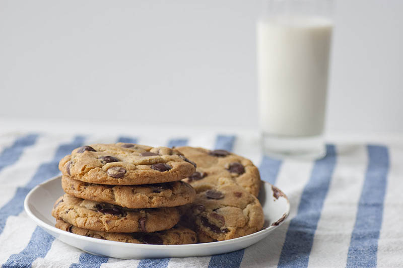

Best Chocolate Chip Cookies

Eat warm and enjoy with a glass of cold milk.
Adapted from The New York Times
PREP TIME
25 minutes
COOKING TIME
20 minutes plus at least 24 hours' chilling time
SKILL LEVEL
Easy
YIELD
2 dozen 3-inch cookies
INGREDIENTS
- 2 cups minus 2 tablespoons cake flour
- 1 2/3 cups bread flour
- 1 1/4 teaspoons baking soda
- 1 1/2 teaspoons baking powder
- 1 1/2 teaspoons coarse salt
- 2 1/2 sticks unsalted butter
- 1 1/4 cups light brown sugar
- 1 cup plus 2 tablespoons granulated sugar
- 2 large eggs
- 2 teaspoons natural vanilla extract
- 1 cup dark chocolate chips
- 1 cup milk chocolate chips
- 1 teaspoon sea salt
INSTRUCTIONS
- Sift cake flour, bread flour, baking soda, baking powder and salt into a medium bowl. Set aside.
- Using an electric mixer, cream together the butter, white sugar, and brown sugar in a large bowl until very light, about 5 minutes.
- Add eggs, one at a time, mixing well after each addition.
- Beat in the vanilla.
- Reduce speed to low, add dry ingredients and mix until just combined, 5 to 10 seconds.
- Drop chocolate chips in and incorporate them without breaking them.
- Press plastic wrap against dough and refrigerate for 24 to 36 hours. Dough may be used in batches, and can be refrigerated for up to 72 hours.
- When ready to bake, preheat oven to 350°F. Line a baking sheet with parchment paper and scoop 1/3 cup mounds of dough (the size of golf balls) onto baking sheet, making sure to turn horizontally any chocolate pieces that are poking up for a more attractive cookie.
- Sprinkle lightly with sea salt and bake until golden brown but still soft, 18 to 20 minutes. Transfer immediately to a wire rack.
- Repeat with remaining dough, or reserve dough, refrigerated, for baking remaining batches the next day.
- Eat warm, with a glass of milk.
EXPERT TIPS
The secret to richer Chocolate Chip Cookies with a more sophisticated flavor is letting the dough rest for 24 to 36 hours before baking.
RELATED RECIPES
- Amazing Chocolate Chip Cookies!
- Beer and Pretzel Chocolate Chip Cookies
- Bisquick® Chocolate Chip Cookies
- Browned Butter and Coconut Chocolate Chip Cookies
- Buttery Chocolate Chip Cookies
- Cherry Chocolate Chip Cookies